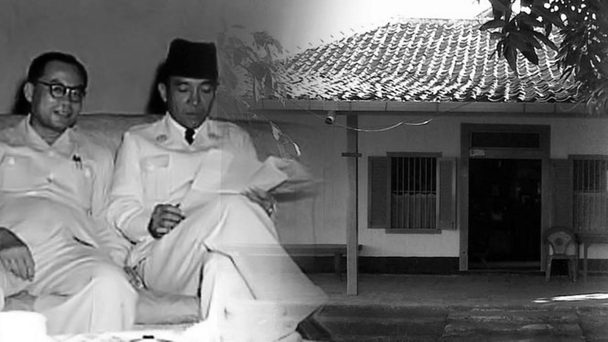

SEJARAH
Sejarah Karawang tersusun dari berbagai fragmen peradaban. Sejarah bandung
diawali dari awal abad hijriah dan terus bersambung hingga era Kerajaan
apa aja dan Masa Kemerdekaan Indonesia.
Kabupaten Karawang merupakan
wilayah pesisir pantai selatan Jawa bagian utata dan termasuk bagian dari
Provinsi Jawa Barat. Secara geografis Kabupaten Karawang terletak antara
107o02’ - 107o40’ BT dan 5o562’ - 6o34’ LS. Secara topografis sebagian
besar wilayahnya termasuk ke dalam dataran alluvial dengan ketinggian 0.6
di atas permukaan laut, dan kemiringan tanah 0.2 %. Luas wilayah Kabupaten
Karawang 1.753,27 km2 atau 3,73% dari luas Provinsi Jawa Barat. Secara
administratif, Kabupaten Karawang memiliki 30 Kecamatan yang terdiri dari
298 Desa dan 11 Kelurahan. Wilayah Karawang berbatasan dengan Kabupaten
Bekasi, Kabupaten Subang dan Kabupaten Purwakarta. Kabupaten Karawang
merupakan wilayah pertanian sawah dengan pengairan (irigasi), dan sebagian
besar penduduknya hidup sebagai petani dan nelayan di daerah pantai.
Profesi sebagai petani dan nelayan ini yang kemudian mempengaruhi corak
kebudayaan yang berkembang di Kabupaten Karawang. Banyak keyakinan, ritus,
dan seni di Kabupaten Karawang yang lahir dari latar belakang pertanian
dan nelayan seperti babarit, nyalin, hajat bumi, nadran, seni topeng dan
tari jaipong. Data dari Badan Pusat Statistik Kabupaten Karawang tahun
2016 menyebutkan bahwa jumlah penduduk di Kabupaten Karawang mencapai
2.295.778 jiwa. Penduduk laki-laki berjumlah 1.177.310 jiwa dan penduduk
perempuan berjumlah 1.118.468 jiwa. Penduduk Karawang memiliki keragaman
bahasa yaitu Sunda, Jawa, Betawi, Melayu dan Cina.
GEOGRAFIS
Wilayah Kabupaten Karawang sebagian besar dataran pantai yang luas,
terhampar di bagian pantai Utara dan merupakan endapan batuan sedimen yang
dibentuk oleh bahan–bahan lepas terutama endapan laut dan aluvium
vulkanik. Sedangkan di bagian tengah kawasan perbukitan yang sebagian
besar terbentuk oleh batuan sedimen, sedang di bagian Selatan yang
merupakan wilayah limpahan dari Kawedanan Jonggol merupakan daerah
perbukitan yang sejuk terdapat Gunung Sanggabuana dengan ketinggian ±
1.291 Mdpl. Wilayah selatan ini secara iklim dan kondisi geografis berbeda
dengan sebagian besar wilayah Kabupaten Karawang yang didominasi oleh
dataran rendah, datar dan beriklim panas, wilayah selatan secara geografis
dan iklim, bahkan kultur lebih mirip dengan wilayah Jonggol, Bogor.
PERISTIWA

Karawang tak pernah bisa dipisahkan dari peristiwa Rengasdengklok 16
Agustus 1945. Pada hari itu, terjadi peristiwa penculikan terbesar dalam
sejarah Republik Indonesia. Pemuda Rengasdengklok menculik Soekarno-Hatta
dan mendesak mereka berdua untuk mempercepat proklamasi tanpa harus
menunggu keputusan Panitia Persiapan Kemerdekaan Indonesia (PPKI). Berawal
dari keberanian beberapa pemuda Indonesia yang tergabung dalam sebuah
perkumpulan yang disebut Menteng 31, yaitu Chaerul Saleh, Soekarni,
Wikana, dan Aidit, para pemuda ini berinisiatif menculik Soekarno-Hatta
karena Jepang yang kalah perang sudah tak mampu lagi mengontrol keadaan di
Indonesia. Tepat pada pukul 3 dini hari, mereka membawa Soekarno-Hatta ke
Rengasdengklok, Karawang.
Penculikan ini dipicu adanya perbedaan pendapat antara golongan pemuda dan
golongan tua mengenai pelaksanaan proses Proklamasi Kemerdekaan Indonesia.
Bagi golongan tua, melakukan proklamasi kemerdekaan RI haruslah sesuai
dengan persetujuan dan usulan dari PPKI. Namun, golongan pemuda tak
menyetujui hal tersebut karena mereka beranggapan bahwa PPKI sejatinya
adalah organisasi bentukan Jepang.
Tentunya itu akan membuat bangsa Indonesia makin sulit dalam mempercepat
kemerdekaannya. Para pemuda beranggapan bahwa jika proklamasi kemerdekaan
telat dilakukan, semakin lama kekuasaan Jepang di Indonesia akan semakin
kuat. Golongan pemuda ingin proklamasi dilakukan secara cepat, mereka
ingin kemerdekaan diperoleh sendiri dan bukan diberikan oleh Jepang
melalui PPKI.
Di akhir drama penculikan ini, Soekarno-Hatta akhirnya kembali ke Jakarta
untuk meneruskan proses perumusan Proklamasi Kemerdekaan RI. Hasilnya,
pada tanggal 17 Agustus 1945, bangsa Indonesia memperoleh kemerdekaannya
sebagai hasil dari jerih payah rakyat dan seluruh elemen bangsa.
TEMPAT WISATA
Karawang, yang terletak di Provinsi Jawa Barat, adalah tempat yang kaya akan budaya, sejarah, dan alam yang mempesona. Meskipun lebih dikenal sebagai pusat industri, Karawang menyimpan sejumlah kejutan wisata yang menunggu untuk dijelajahi.
Karawang memiliki banyak destinasi wisata yang menarik untuk ditawarkan kepada para pengunjung. Dari pantai indah hingga air terjun yang megah, dari situs bersejarah hingga kebun raya yang memukau, Karawang memiliki sesuatu untuk semua orang.
Curug Cigentis
Bagi para pencinta alam, Curug Cigentis adalah surga tersembunyi yang terletak di Desa Sukamulya, Karawang. Air terjun ini menawarkan pemandangan alam yang menakjubkan dengan air yang jatuh dari tebing setinggi 25 meter ke kolam yang jernih.
Candi Jiwa

Karawang nggak hanya menawarkan tempat wisata untuk anak-anak dan keluarga, tetapi juga memiliki destinasi sejarah dan budaya yang menarik, seperti Candi Jiwa. Candi Jiwa adalah bangunan kuno peninggalan peradaban masa lalu yang terletak di kawasan Candi Batujaya.
Candi Jiwa berlokasi di Segaran, Batujaya, Kabupaten Karawang, Jawa Barat, yang menawarkan pemandangan indah. Tiket masuk ke kompleks Candi Jiwa ini hanya Rp 5.000 per orang, dengan tambahan biaya parkir kalau kamu datang dengan kendaraan. Tempat ini buka setiap hari dari pukul 08.00 hingga 16.00 WIB.
Rumah Djiauw Kie Siong

Tempat wisata sejarah ini memiliki sejarah kemerdekaan yaitu Rumah Djiaw Kie Siong yang berlokasi di Dusun Bojong, Rengasdengklok, Kabupaten Karawang.
Rumah dijadikan sebagai tempat pengasingan Presiden Pertama Ir. Soekarno sebelum hari kemerdekaan Indonesia. Soekarno dan Hatta diculik oleh sekelompok pemuda dan didesak untuk segera memproklamirkan kemerdekaan Indonesia.
Para pemuda membawa Bung Karno-Hatta ke Rengasdengklok untuk mempersiapkan naskah kemerdekaan. Rumah Djiaw Kie Siong dipilih karena dianggap aman dan tidak mencurigakan.
Adapun Djiaw Kie Siong semasa hidupnya bekerja sebagai seorang petani. Ia lahir pada lahir sekitar pada tahun 1880 di Desa Pacing, Sambo, Karawang dan merupakan keturunan Tionghoa Hakka.